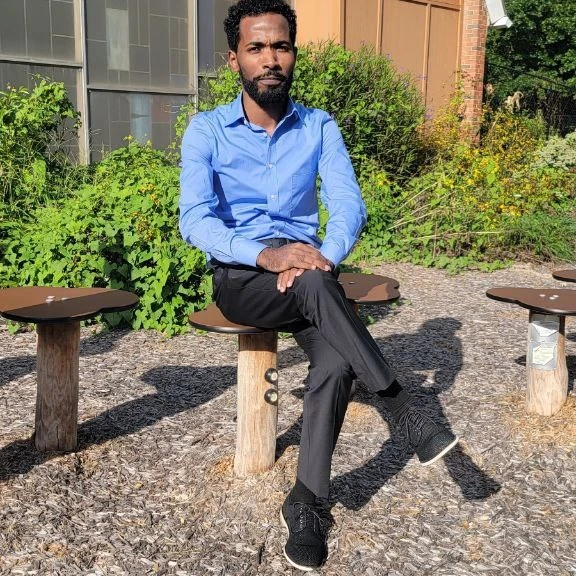
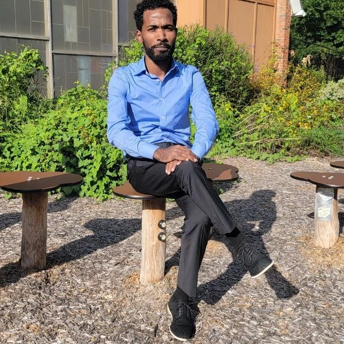

About Me


 


Hello! I am Robel Mamo
I graduated college in 2017 from the University of Maryland. After graduating, I moved to North Carolina state and worked as a Manager for Frist Watch for four years. At the beginning of 2021, I created my own company, which includes volunteers training people how to cook and also giving them certification for the manager and cooking. I am currently working with central piedmont community college on workshops and labs; I trained the students how to cook and certified them after training in four-month courses; besides that, I started a tutorial center for a programming language to endorse people with computer skills. Right now, I am working on the tutorial center and teaching and guiding students who want to learn programming languages online.
Education
- Maryland University
- Bachelor Degree in Hotel Management and Tourism
- ESOL Strand
- GPA: 4.0
- Graduated: 2018
- Addis Ababa University - 2010
- BS in Elementary Education
- Concentration: STEM
- GPA: 4.0
Honors
- Maryland University
- University Valedictorian - 2018
- Summa Cum Laude - 2018
- Scholars Program Graduate - 2018
- Deans List 2014-2018
- Kirkland Merit Scholarship 2014-2018
Manager certification
- Community Kitchen Program 2019-2022
- CHief Executive Officer
- Frist Watch 2018-2021
- General Manager
- Maryland 2016-2018
- General Manager at First Watch